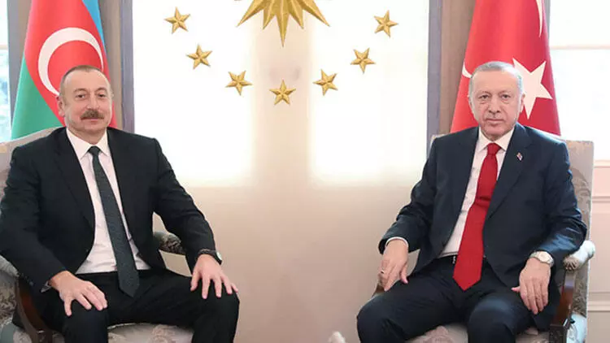
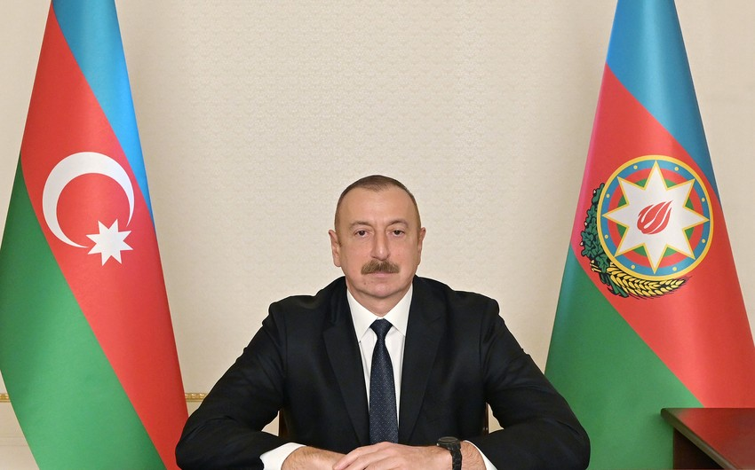
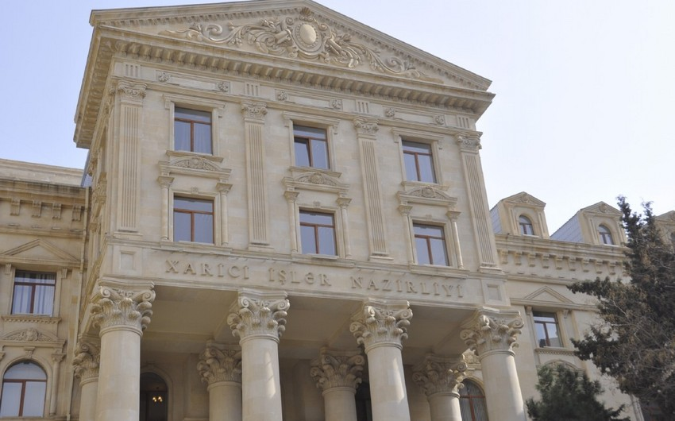
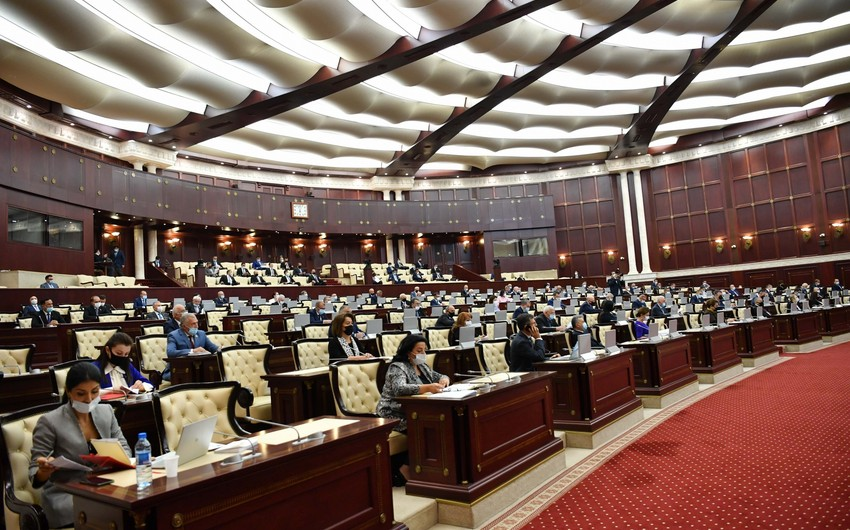

>

Azərbaycan və Türkiyə
prezidentləri birgə nahar ediblər

SOCAR 2023-cü ilin 1-ci rübünə dair
qazma, hasilat, emal və
göstəricilərini açıqlayıb
>SOCAR 2023-cü ilin 1-ci rübünə dair
qazma, hasilat, emal və
ixrac göstəricilərini
açıqlayıb
Dünya iqtisadiyyatının sürətli
transformasiyası və
enerji bazarlarında
baş verən dəyişikliklər
fonunda
Azərbaycan Respublikası
Dövlət Neft Şirkəti
(SOCAR) 2023-cü ilin
1-ci rübünü uğurla başa
vurmağa nail

The idea for creating the Modrzewie
Estate signet is to
combine the well-known
shape of the house,
which also appears on the
shell of the cone, and radially
arranged straight line
arranged straight lines
arranged straight lines
referring to the shape of
a larch twig and sun rays piercing
through the trees.
İlham Əliyev
Beynəlxalq Avtomobil
Federasiyasının prezidentini
qəbul edib - YENİLƏNİB
Azərbaycan Respublikasının Prezidenti
İlham Əliyev aprelin 30-da Beynəlxalq
Avtomobil Federasiyasının
prezidenti Məhəmməd Ben Sulayemi qəbul edib.
"Report" xəbər verir ki, görüşdə
Azərbaycan ilə Beynəlxalq
Avtomobil Federasiyası
arasında uzun illər mövcud
olan uğurlu əməkdaşlıqdan
məmnunluq ifadə edilib.
Prezident İlham Əliyev:
"Yaxın gələcəkdə Azərbaycanda
“Bayraktar” mərkəzi yaradılacaq"

"Yaxın gələcəkdə Azərbaycanda
“Bayraktar” mərkəzi yaradılacaq".
"Report" xəbər verir ki, bunu Azərbaycan
Prezidenti İlham Əliyev
İstanbulda keçirilən “TEKNOFEST”
aerokosmik və texnologiya festivalında çıxışında bildirib.
Türkiyə Prezidenti Kahramanmaraşda təməli
qoyulan evlərə görə
Prezident İlham Əliyevə təşəkkür edib

Kahramanmaraşda təməlini bir az əvvəl
birlikdə qoyduğumuz evlər
üçün İlham qardaşıma
çox təşəkkür edirəm.
"Report" xəbər
verir ki, bunu aprelin
29-da Türkiyə
Prezidenti Rəcəb
Tayyib Ərdoğan
İstanbulda keçirilən
“TEKNOFEST” aerokosmik və
texnologiya festivalında çıxışında bildirib.
Saatlıda qayınatasını öldürməyə
cəhd etməkdə şübhəli bilinən şəxs tutulub sok sok xeberler

Saatlıda qəsdən adam öldürməyə cəhd etməkdə şübhəli bilinən şəxs tutulub.
Bu barədə "Report"a Saatlı rayon prokurorluğundan bildirilib.
Aprelin 30-u saat 12 radələrində Saatlı rayonu Məmmədabad kənd sakinləri - 2004-cü il təvəllüdlü Əminə Əmirova və atası, 1980-ci il təvəllüdlü Kamal Əmirovun xəsarət almaları barədə rayon prokurorluğuna məlumat daxil olub.
Olimpiya mükafatçısı narkotik satdığı üçün tutuldu

Üç nəfər, o cümlədən sovet idmançısı Qoada narkotiklərə nəzarət bürosunun əməkdaşları tərəfindən saxlanılıb. Qrup əcnəbilərə narkotik maddələr satmaqda ittiham olunur. Bu işdə Varqanovadan başqa daha bir rusiyalı - adı açıqlanmayan keçmiş polis ittiham olunur.
XİN: "Ermənistanın sərhəd- buraxılış məntəqəsi XİN: "Ermənistanın sərhəd- buraxılış məntəqəsi ilə bağlı iddiaları qəbuledilməzdir"

"Ermənistan Xarici İşlər Nazirliyinin mətbuat katibi Ani Badalyanın “Azadlıq” radiosunun sualına cavabında Laçın yolunda sərhəd-nəzarət keçid məntəqəsinin təsis edilməsi, Ermənistanın Azərbaycan ərazisində qüvvələri, 8 kəndin hələ də işğal altında saxlanması ilə bağlı səsləndirdiyi cəfəng iddiaların heç bir əsası yoxdur və onları qətiyyətlə rədd edirik".
Məktəbli qızı maşınına mindirdi: "Heç kəs olmayan yerdə..." - İsmayıllıda şok
İsmayıllı rayonunda 1998-ci il təvəllüdlü Əsəd sosial şəbəkədə tanış olduğu, yetkinlik yaşına çatmayan Aydanla (adlar şərti verilib - red.) cinsi əlaqədə olub.
Sonxeber.az Teleqraf.com-a istinadən bildirilir ki, Əsəd 2022-ci ilin yanvarında dəqiq tarixi müəyyən edilməyən vaxtda "İnstagram" sosial şəbəkəsi vasitəsilə tanış olduğu Aydanla bir neçə dəfə müxtəlif vaxtlarda görüşüb, sevgi münasibətlərində olub.
Əsəd Aydanın 15 yaşı olmasını bilib, həmin il may ayının sonlarında saat 16.30-da yenidən onunla görüşüb. O, istifadəsində olan "Vaz 2106" markalı avtomobillə İsmayıllı şəhəri ərazisində təqribən 30 dəqiqə gəzdikdən sonra 15 yaşlı qızla razılıq əsasında intim münasibətdə olmağa qərar verib.
Sumqayıtda azyaşlının ölümü ilə bağlı cinayət işi başlanıb
Sumqayıtda azyaşlının ölümü ilə bağlı cinayət işi başlanıb.
Bu barədə Sonxeber.az-a Sumqayıt Şəhər Prokurorluğundan məlumat verilib.
Aprelin 29-u 2016-cı il təvəllüdlü Fərid Bakarovun Sumqayıt Şəhər Uşaq Xəstəxanasında ölməsi barədə şəhər prokurorluğuna məlumat daxil olub.
İŞİD və “Taliban’’a qoşulan azərbaycanlı ilə bağlı QƏRAR
.jpg)
Ali Məhkəmədə xarici dövlətin ərazisində qanunsuz silahlı birləşmənin tərkibində iştirak etməkdə təqsirləndirilən Valeh Nəbiyevin (şərti) barəsindəki hökmdən verilən kassasiya şikayətinə baxılıb.
Pravda.az-ın əldə etdiyi məlumata görə, hakim Əziz Seyidovun sədrliyi ilə keçirilən prosesdə qərar elan olunub.
Qərara əsasən, onun kassasiya şikayəti təmin edilməyib.
Parlament “Dövlət qulluğu haqqında” qanuna dəyişikliyi I oxunuşda qəbul edib

Naxçıvan Muxtar Respublikasında Azərbaycan Prezidentinin səlahiyyətli nümayəndəsinin vəzifəsinin inzibati vəzifələrin birinci təsnifatına daxil edilməsi barədə layihə I oxunuşda təsdiqlənib.
“Report”un xəbərinə görə, bununla bağlı “Dövlət qulluğu haqqında” qanuna dəyişiklik layihəsi parlamentin bu gün keçirilən iclasında müzakirəyə çıxarılıb.
Layihəyə əsasən, Naxçıvan Muxtar Respublikasında Azərbaycan Prezidentinin səlahiyyətli nümayəndəsinin müavinlərinin vəzifələri inzibati vəzifələrin ikinci təsnifatında yer alacaq.

Uşaqlarının yanında arvadını boğdu, əmisi oğlunu isə...
Dünyanın ən perspektivli gəncləri açıqlanıb: Azərbaycan Premyer Liqasında 19 belə futbolçuya şans verilib - SİYAHI
Beynəlxalq İdman Araşdırmalar
Mərkəzi (CIES) dünyanın
ən perspektivli
200 gənc futbolçusunun siyahısını dərc edib.
“Report”un qurumun saytına
istinadən məlumatına
görə, hər mövqe üzrə
ən yaxşılarla bağlı araşdırma 75 çempionat arasında aparılıb.
CIES 20 yaşadək
futbolçular
arasında son 365 gün
ərzində ən çox rəsmi matçda iştirak edənlərə üstünlük verib. İspaniyanın
“Barselona” klubunun yarımmüdafiəçisi Pablo Qavi bu baxımdan ən
reytinqli oyunçudur.
Azərbaycandan heç kimin düşmədiyi siyahıda Türkiyənin cəmi bir futbolçusuna yer verilib. Bu, “Fənərbağça”nın yarımmüdafiəçisi Arda Gülerdir. O, dünyanın ən perspektivli 17-ci hücumameyilli oyunçusu hesab edilib.
Aprel ayı üçün bioloji fəallığa malik qida əlavələrinin ekspertiza nəticələri açıqlanıb - SİYAHI
Aprel ayı üçün bioloji fəallığa malik qida əlavələrinin (BFMQƏ) ekspertiza nəticələri açıqlanıb.
“Report”un əldə etdiyi məlumata görə, daxil olan müraciətlərdən 7-nə mənfi rəy verilib.
Xitam verilən müraciətlərin sayına gəlincə, bu rəqəm də 7-dir.
Təqdim olunan sənədlər və hazır məhsulun nümunəsinin ekspertizasının nəticəsinə əsasən, Türkiyə istehsalı olan Sofix (şərbət, 150 ml) adlı məhsul immun sistemin fəaliyyətini yaxşılaşdırmaq üçün tövsiyə olunan preparat olub, öz tərkibi və istifadə qaydalarına görə dərman vasitəsidir. Məhsulun tərkibində mövcud olan B12 vitaminin 1 ml-də dozası 333 mcg təşkil edir, bu da BFMQƏ-lər üçün (6-9 mcg) uyğun deyil.
Blinken Ukraynanın nə zaman əks-hücuma keçəcəyini açıqlayıb
3 May , 2023 saat 00:35
Ukrayna ordusu qarşıdakı həftələrdə əks-hücum əməliyyatına başlayacaq.
“Report” xəbər verir ki, bu barədə ABŞ dövlət katibi Entoni Blinken “Fox News” telekanalına müsahibəsində bildirib.
“Biz bilirik ki, ukraynalılar qarşıdakı həftələrdə əks-hücum keçirməyi düşünürlər. Görək nə olacaq”, - diplomat bildirib.
Bundan əvvəl ABŞ-nin Birləşmiş Qərargah Rəisləri ABŞ-nin Komitəsinin rəhbəri, general Mark Milli Ukraynadakı müharibənin 2023-cü ildə bitməsi ehtimalının az olduğunu söyləmişdi.
parolu daxil edin zehmet olmasa
YOUTUBE
FAKEBOOK
GOOGLE
INSTAGRAM
may aynin 25 dek mcdonalds endrerimdir
buyrun size nece komel ede bilerik
mcdonaldsindi al